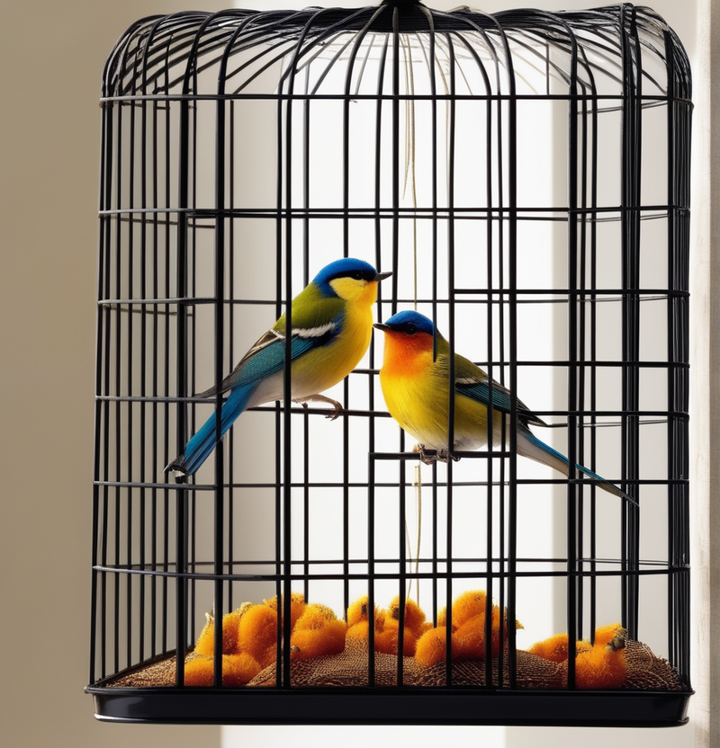

|  |
En la actualidad, los pájaros de compañía son apreciados por su colorido plumaje, sus melodiosos cantos y sus personalidades diversas. Existen numerosas especies de aves domesticadas que han sido seleccionadas y criadas para convertirse en compañeros encantadores. Desde los periquitos hasta los loros, estas aves aladas añaden alegría y vitalidad a los hogares.
Las aves poseen sentidos agudos que les permiten adaptarse a sus entornos. Su vista es excepcional, con la capacidad de ver colores que son invisibles para los humanos, y su oído agudo les permite percibir sonidos a largas distancias. Algunas especies, como los loros, son notables por su habilidad para imitar palabras y sonidos. La inteligencia de las aves es sorprendente, con muchas especies capaces de aprender trucos, reconocer a sus dueños y resolver problemas simples. Su naturaleza social las hace disfrutar de la interacción y la compañía, y algunas aves incluso forman fuertes vínculos emocionales con sus cuidadores humanos.